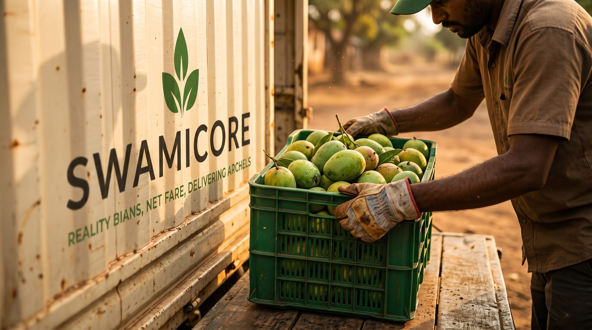
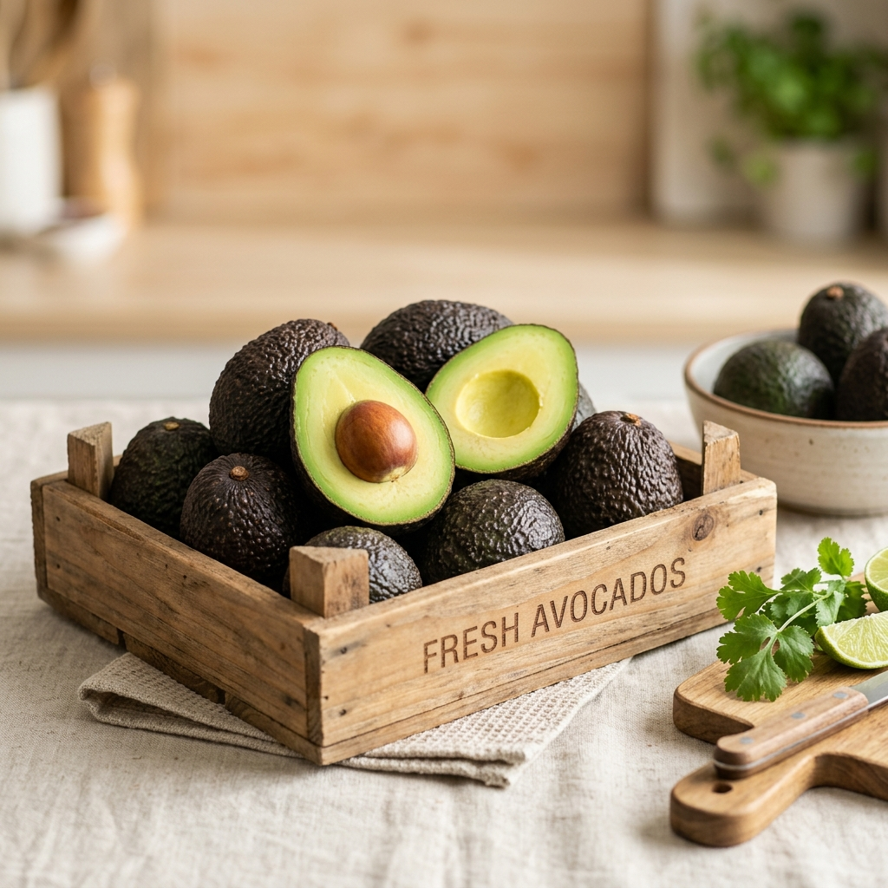

Faster farmer settlement
Pickup-linked payments and lot status updates reduce waiting cycles.
Rooted Indian agri export
From Indian farms to world markets, with every crate graded, documented, routed, insured, and paid through one transparent export lane.
buyer countries
farmer network
export batches
farmer payouts
Platform
SWAMICORE replaces fragmented sourcing, manual inspection, scattered documents, and delayed payouts with a single operating layer built for farmers, buyers, and export teams.
Pickup-linked payments and lot status updates reduce waiting cycles.
Vision scores, inspector notes, and buyer-grade evidence stay attached to each batch.
Export paperwork is generated, checked, and routed from verified shipment data.

Mumbai to Dubai
Phyto, FSSAI, invoice
Zero-touch architecture
Demand signals guide farmer harvest plans and lot availability.
Photos and inspections generate quality scores before pickup.
Crates are batched by grade, route, destination, and shelf-life needs.
AI-assisted documentation prepares export files from verified data.
Containers move with tracking, insurance, and buyer visibility.
Farmers receive payout updates within 24 hours of pickup.
AI models
Each export batch improves the trail of grade quality, price signals, route reliability, compliance checks, demand timing, and trust.
Build with usIndian produce
Color graded, defect screened, packed by shelf-life window.
Cluster quality, residue documents, and route temperature checks.
Batch origin, lab checks, and compliance records in one file.

Ripeness, packing density, and destination timing aligned.
Size bands, freshness checks, and buyer-ready documentation.
Partner lane
For buyers, FPOs, exporters, and logistics teams ready to make produce trade cleaner, faster, and more transparent.